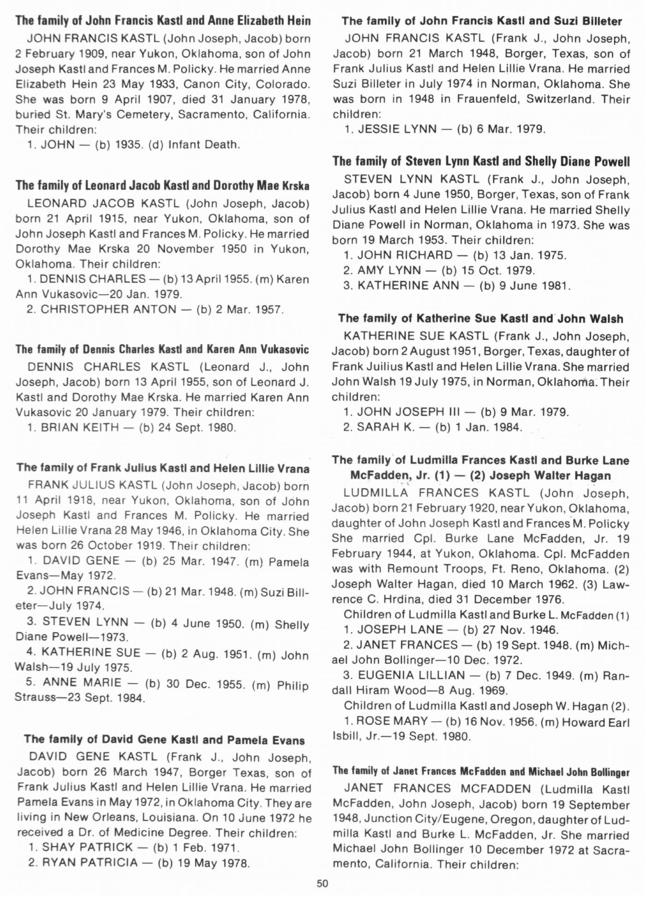

The book · The Family of Jacob Kastl
Page 50 The family of John Francis Kastl and Anne Elizabeth Hein


Transcription
The family of John Francis Kastl and Anne Elizabeth Hein
JOHN FRANCIS KASTL (John Joseph, Jacob) born 2 February 1909, near Yukon, Oklahoma, son of John Joseph Kastl and Frances M. Policky. He married Anne Elizabeth Hein 23 May 1933, Canon City, Colorado. She was born 9 April 1907, died 31 January 1978, buried St. Mary's Cemetery, Sacramento, California. Their children:
- JOHN — (b) 1935. (d) Infant Death.
The family of Leonard Jacob Kastl and Dorothy Mae Krska
LEONARD JACOB KASTL (John Joseph, Jacob) born 21 April 1915, near Yukon, Oklahoma, son of John Joseph Kastl and Frances M. Policky. He married Dorothy Mae Krska 20 November 1950 in Yukon, Oklahoma. Their children:
- DENNIS CHARLES — (b) 13 April 1955. (m) Karen Ann Vukasovic—20 Jan. 1979.
- CHRISTOPHER ANTON — (b) 2 Mar. 1957.
The family of Dennis Charles Kastl and Karen Ann Vukasovic
DENNIS CHARLES KASTL (Leonard J., John Joseph, Jacob) born 13 April 1955, son of Leonard J. Kastl and Dorothy Mae Krska. He married Karen Ann Vukasovic 20 January 1979. Their children:
- BRIAN KEITH — (b) 24 Sept. 1980.
The family of Frank Julius Kastl and Helen Lillie Vrana
FRANK JULIUS KASTL (John Joseph, Jacob) born 11 April 1918, near Yukon, Oklahoma, son of John Joseph Kastl and Frances M. Policky. He married Helen Lillie Vrana 28 May 1946, in Oklahoma City. She was born 26 October 1919. Their children:
- DAVID GENE — (b) 25 Mar. 1947. (m) Pamela Evans—May 1972.
- JOHN FRANCIS — (b) 21 Mar. 1948. (m) Suzi Billeter—July 1974.
- STEVEN LYNN — (b) 4 June 1950. (m) Shelly Diane Powell—1973.
- KATHERINE SUE — (b) 2 Aug. 1951. (m) John Walsh—19 July 1975.
- ANNE MARIE — (b) 30 Dec. 1955. (m) Philip Strauss—23 Sept. 1984.
The family of David Gene Kastl and Pamela Evans
DAVID GENE KASTL (Frank J., John Joseph, Jacob) born 26 March 1947, Borger Texas, son of Frank Julius Kastl and Helen Lillie Vrana. He married Pamela Evans in May 1972, in Oklahoma City. They are living in New Orleans, Louisiana. On 10 June 1972 he received a Dr. of Medicine Degree. Their children:
- SHAY PATRICK — (b) 1 Feb. 1971.
- RYAN PATRICIA — (b) 19 May 1978.
The family of John Francis Kastl and Suzi Billeter
JOHN FRANCIS KASTL (Frank J., John Joseph, Jacob) born 21 March 1948, Borger, Texas, son of Frank Julius Kastl and Helen Lillie Vrana. He married Suzi Billeter in July 1974 in Norman, Oklahoma. She was born in 1948 in Frauenfeld, Switzerland. Their children:
- JESSIE LYNN — (b) 6 Mar. 1979.
The family of Steven Lynn Kastl and Shelly Diane Powell
STEVEN LYNN KASTL (Frank J., John Joseph, Jacob) born 4 June 1950, Borger, Texas, son of Frank Julius Kastl and Helen Lillie Vrana. He married Shelly Diane Powell in Norman, Oklahoma in 1973. She was born 19 March 1953. Their children:
- JOHN RICHARD — (b) 13 Jan. 1975.
- AMY LYNN — (b) 15 Oct. 1979.
- KATHERINE ANN — (b) 9 June 1981.
The family of Katherine Sue Kastl and John Walsh
KATHERINE SUE KASTL (Frank J., John Joseph, Jacob) born 2 August 1951, Borger, Texas, daughter of Frank Juilius [sic] Kastl and Helen Lillie Vrana. She married John Walsh 19 July 1975, in Norman, Oklahoma. Their children:
- JOHN JOSEPH III — (b) 9 Mar. 1979.
- SARAH K. — (b) 1 Jan. 1984.
The family of Ludmilla Frances Kastl and Burke Lane McFadden, Jr. (1) — (2) Joseph Walter Hagan
LUDMILLA FRANCES KASTL (John Joseph, Jacob) born 21 February 1920, near Yukon, Oklahoma, daughter of John Joseph Kastl and Frances M. Policky She married Cpl. Burke Lane McFadden, Jr. 19 February 1944, at Yukon, Oklahoma. Cpl. McFadden was with Remount Troops, Ft. Reno, Oklahoma. (2) Joseph Walter Hagan, died 10 March 1962. (3) Lawrence C. Hrdina, died 31 December 1976.
Children of Ludmilla Kastl and Burke L. McFadden (1)
- JOSEPH LANE — (b) 27 Nov. 1946.
- JANET FRANCES — (b) 19 Sept. 1948. (m) Michael John Bollinger—10 Dec. 1972.
- EUGENIA LILLIAN — (b) 7 Dec. 1949. (m) Randall Hiram Wood—8 Aug. 1969.
Children of Ludmilla Kastl and Joseph W. Hagan (2).
- ROSE MARY — (b) 16 Nov. 1956. (m) Howard Earl Isbill, Jr.—19 Sept. 1980.
The family of Janet Frances McFadden and Michael John Bollinger
JANET FRANCES MCFADDEN (Ludmilla Kastl McFadden, John Joseph, Jacob) born 19 September 1948, Junction City/Eugene, Oregon, daughter of Ludmilla Kastl and Burke L. McFadden, Jr. She married Michael John Bollinger 10 December 1972 at Sacramento, California. Their children:
People from the line of descent on this page
- John Francis Kastl b. 1909
- Leonard Jacob Kastl b. 1915
- Frank Julius Kastl b. 1918
- Ludmilla Frances Kastl b. 1920
- Anne Elizabeth Hein 1907–1978
- John Kastl b. 1935
- Dennis Charles Kastl b. 1955
- Christopher Anton Kastl b. 1957
- Brian Keith Kastl b. 1980
- Helen Lillie Vrana b. 1919
- David Gene Kastl b. 1947
- John Francis Kastl b. 1948
- Steven Lynn Kastl b. 1950
- Katherine Sue Kastl b. 1951
- Anne Marie Kastl b. 1955
- Pamela Evans
- Shay Patrick Kastl b. 1971
- Ryan Patricia Kastl b. 1978
- Suzi Billeter b. 1948
- Jessie Lynn Kastl b. 1979
- Shelly Diane Powell b. 1953
- John Richard Kastl b. 1975
- Amy Lynn Kastl b. 1979
- Katherine Ann Kastl b. 1981
- John Joseph Walsh III b. 1979
- Sarah K. Walsh b. 1984
- Burke Lane McFadden, Jr.
- Joseph Walter Hagan d. 1962
- Joseph Lane McFadden b. 1946
- Janet Frances McFadden b. 1948
- Eugenia Lillian McFadden b. 1949
- Rose Mary Hagan b. 1956
Transcriber’s notes
Page ends with 'Their children:' for Janet Frances McFadden and Michael John Bollinger; the list continues on the next page. 'Frank Juilius' typo as printed in Katherine Sue entry. No period after 'Policky' in Ludmilla entry, as printed. David Gene's son Shay Patrick (b) 1 Feb. 1971 precedes the stated May 1972 marriage, as printed.